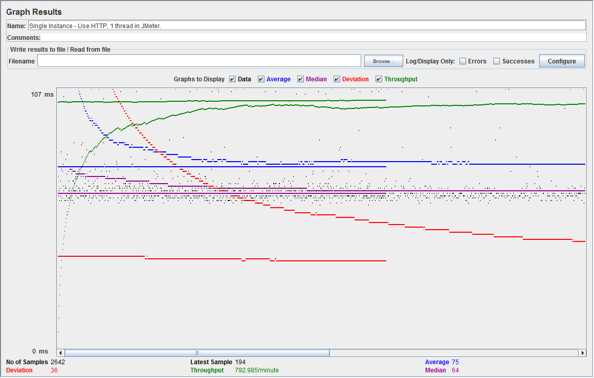
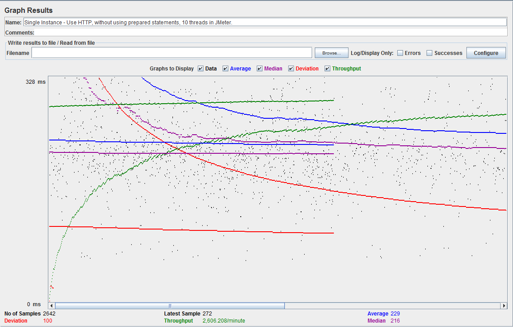
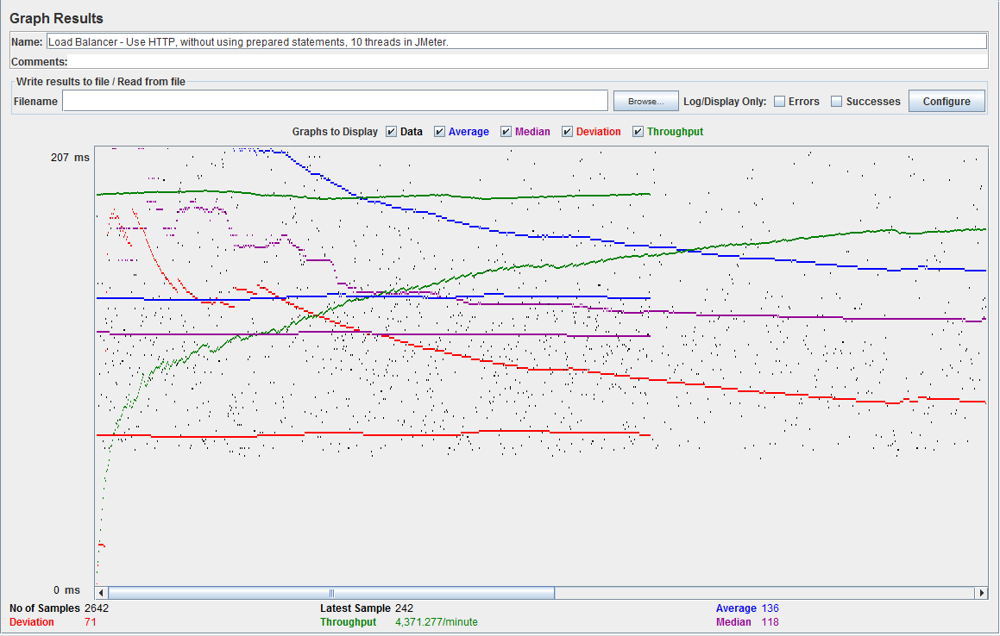
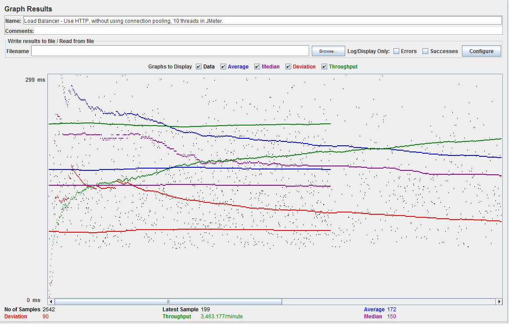

| Single-instance version cases |
Graph Results Screenshot |
Average Query Time(ms) |
Average Search Servlet Time(ms) |
Average JDBC Time(ms) |
Analysis |
| Case 1: HTTP/1 thread |
 |
75 |
42.6516 |
29.9436 |
I found the single instance was faster than the load balancer because we are making a direct connection.
However with the load balancer we have to go through one more node before we get our request.
I also found that with 1 thread the responses come back faster because there is only 1 request being served.
|
| Case 2: HTTP/10 threads |
 |
233 |
350.7398 |
243.5634 |
Having multiple threads making requests to the web application causes the response times to be slower and jdbc is affected as well.
Multiple request consume more cpu power. However when using 10 threads, going through the whole query_load.txt file was faster than using a single thread.
This is because the overall average query time did not increase 10x. However the servlet time and jdbc was affected by about 10x
|
| Case 3: HTTPS/10 threads |
|
236 |
362.4191 |
256.4008 |
Using a secure connection seemed to be a little bit slower because there is more overhead making the connection to the servlet.
JDBC and servlet time did not increase as much as the Average query time. This is because when the timer for the servlet and jdbc are made
we don't include the overhead of making the secure connection.
|
| Case 4: HTTP/10 threads/No prepared statements |
 |
229 |
355.1321 |
243.3292 |
Having prepared statements did not affect the jdbc time too much. Prepared statements prevent sql injection and are compiled.
If we were making batch queries then the prepared statements would improve our average jdbc time. However we are only making one
query at a time.
|
| Case 5: HTTP/10 threads/No connection pooling |
|
305 |
415.7025 |
279.0054 |
Connection pooling improved our jdbc average time. This is because we do not have the extra over head of creating a new connection everytime a new request is made.
We are taking already open connections and making queries from those connections. Then after we are done we put the connections back into the pool.
|
| Scaled version cases |
Graph Results Screenshot |
Average Query Time(ms) |
Average Search Servlet Time(ms) |
Average JDBC Time(ms) |
Analysis |
| Case 1: HTTP/1 thread |
|
75 |
44.8163 |
33.0464 |
The response times for the load balancer are slower because we are not making a direct connection to the end server. We have to ask
go through one extra node before reaching the destination. Then the load balancer passes back the request. Using 1 thread with load balancing is slower
because a single instance can easily handle 1 request quickly.
|
| Case 2: HTTP/10 threads |
|
143 |
207.3321 |
155.4785 |
Using multiple threads to make requests to the servers with load balancing helped a significant amount. All the average times are about 2x as fast as a single instance.
The load balancer would put about half the request in the master and half into the slave so that the user would get responses faster.
The average query time multiplied by a little under 3x. The servlet time increased by 5x and jdbc increased by 5x as well.
|
| Case 3: HTTP/10 threads/No prepared statements |
 |
136 |
206.6705 |
155.4977 |
Having no prepared statements did not make a noticable difference in any of the times. They were all about the same. This is because we are only making 1 prepared statement per request.
If we batched the prepared statements it would be faster.
|
| Case 4: HTTP/10 threads/No connection pooling |
 |
172 |
242.1212 |
169.5906 |
Having no connection pooling increased our average times by a notable amount. This is because the jdbc average time increases. There is overhead with making new connections.
|